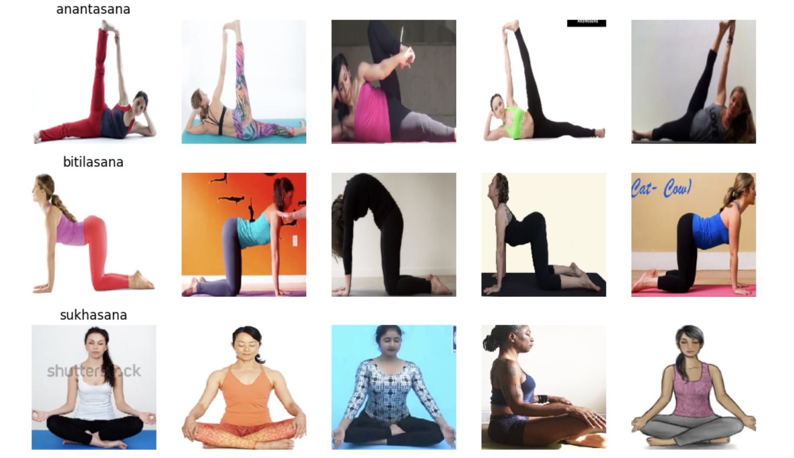

Project Goal:
This project compared multiple methods to classify images of people performing 107 different yoga poses. Methodologies tested include a CNN, a fine tuning the VGG19 Imagenet CNN, and Ultralytics Pose Estimation feature extraction with a Neural Network classifier. The trained models were then used to create a web app with Streamlit API, which allows users to upload images of them performing yoga and provide idenfication of the pose.
Modeling Approach:
- Regular CNN:
- Architecture: 5 convolutional layers with max pooling, and 2 dense layers- resulting in 812K total parameters.
- Results: 38% Test Accuracy
- Fine Tuning of VGG19 Imagenet:
- Architecture: The first 20 layers of the Imagenet model were frozen, with 2 dense layers added- resulting in 46M total parameters.
- Results: 65% Test Accuracy
- Pose Estimation Feature Extraction:
- Architecture: Yolo11 Pose was used to create tensors with information about where a person's body and limbs are located relative to one another. These 'pose estimation' results were then fed into a neural network with 6 hidden layers.
- Results: 30% Test Accuracy
Ultralytics provides open source models including YOLO and YOLO-based Posed Estimation models for object detection. The image above provides an example of the Ultralytics pose esitmation output.
Highlighted Code Sections:
# Regular CNN Architecture
model3 = Sequential([
Conv2D(32, (3, 3), activation="relu", input_shape=(224, 224, 3)),
BatchNormalization(),
MaxPooling2D(pool_size=(2, 2)),
Conv2D(64, (3, 3), activation="relu"),
MaxPooling2D(pool_size=(2, 2)),
Conv2D(128,(3, 3), activation='relu'),
MaxPooling2D(pool_size=(2, 2)),
Conv2D(128, (3, 3), activation="relu"),
MaxPooling2D(pool_size=(2, 2)),
Conv2D(128, (3, 3), activation="relu"),
MaxPooling2D(pool_size=(2, 2)),
Flatten(),
Dense(128, activation="relu"),
Dropout(0.5),
Dense(len(class_labels), activation="softmax") # Output layer
])
# Compile model with adam optimizer
model3.compile(optimizer='adam', loss="categorical_crossentropy", metrics=["accuracy"])
# VGG Imagenet transfer learning
model = applications.VGG19(weights = "imagenet", include_top=False, input_shape=(224, 224, 3))
for layer in model.layers[:20]:
layer.trainable = False
#Adding custom Layers
x = model.output
x = Flatten()(x)
x = Dense(1024, activation="relu")(x)
x = Dropout(0.5)(x)
x = Dense(1024, activation="relu")(x)
predictions = Dense(num_classes, activation="softmax")(x)
# creating the final model
model_final = Model(model.input, predictions)
# Feature Extraction with Ultralytics Pose Estimation and NN Classifier
from ultralytics import YOLO
# Load YOLO Pose Estimation Model
model_yolo = YOLO("yolo11n-pose.pt") # Update with your model file
# Set dataset path
dataset_path = "/content/yoga-poses-dataset-107/107 yoga poses/train" # Update with your dataset path
# Get all image file paths
image_paths = glob(os.path.join(dataset_path, "**/*.png"), recursive=True) # Adjust extension if needed
# Store extracted features and labels
keypoints_list = []
labels = []
valid_image_paths = [] # Store only images where a person is detected
print("Extracting keypoints from images...")
# Process images
for img_path in image_paths:
# Run YOLO pose estimation
results = model_yolo(img_path)
# Extract keypoints (for the first detected person)
for result in results:
if result.keypoints is not None and len(result.keypoints.xy.cpu().numpy()) > 0:
keypoints = result.keypoints.xy.cpu().numpy().flatten() # Flatten keypoints array
keypoints_list.append(keypoints)
# Extract label from folder name (Assuming structure: dataset/class_name/image.jpg)
label = os.path.basename(os.path.dirname(img_path))
labels.append(label)
valid_image_paths.append(img_path) # Store valid image path
print(f"Total images processed: {len(image_paths)}")
print(f"Valid images with detected persons: {len(valid_image_paths)}")
# NN Classifier
num_classes = len(label_encoder.classes_) # Number of unique yoga poses
model_nn = Sequential([
Dense(128, input_shape=(X_train.shape[1],)),
tf.keras.layers.LeakyReLU(alpha=0.01),
BatchNormalization(),
Dense(128),
tf.keras.layers.LeakyReLU(alpha=0.01),
BatchNormalization(),
Dense(128),
tf.keras.layers.LeakyReLU(alpha=0.01),
BatchNormalization(),
Dense(128),
tf.keras.layers.LeakyReLU(alpha=0.01),
BatchNormalization(),
Dense(128),
tf.keras.layers.LeakyReLU(alpha=0.01),
BatchNormalization(),
Dense(128),
tf.keras.layers.LeakyReLU(alpha=0.01),
BatchNormalization(),
Dense(64),
tf.keras.layers.LeakyReLU(alpha=0.01),
BatchNormalization(),
Dropout(0.6),
Dense(num_classes, activation="softmax") # Multi-class classification
])
# Compile Model
model_nn.compile(optimizer=Adam(learning_rate=0.001 ),
loss="sparse_categorical_crossentropy",
metrics=["accuracy"])